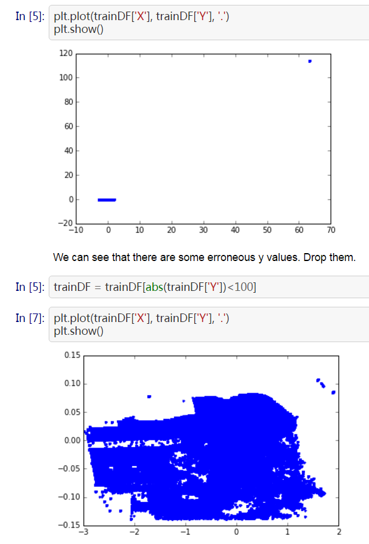
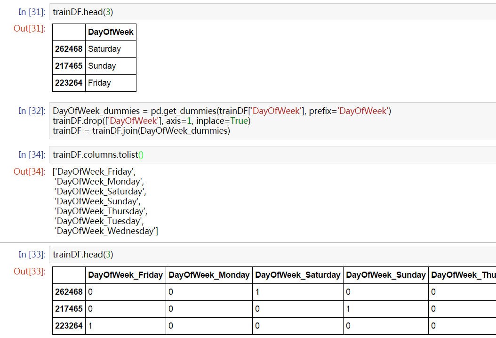
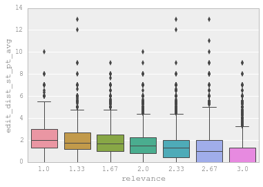

Introduction
Kaggle is the best place to learn from other data scientists. Many companies provide data and prize money to set up data science competitions on Kaggle. Recently I had my first shot on Kaggle and ranked 98th (~ 5%) among 2125 teams. Being my Kaggle debut, I feel quite satisfied with the result. Since many Kaggle beginners set 10% as their first goal, I want to share my two cents on how to achieve that.
This post is also available in Chinese.
Updated on Oct 28th, 2016: I made many wording changes and added several updates to this post. Note that Kaggle has went through some major changes since I published this post, especially with its ranking system. Therefore some descriptions here might not apply anymore.
Most Kagglers use Python or R. I prefer Python, but R users should have no difficulty in understanding the ideas behind tools and languages.
First let’s go through some facts about Kaggle competitions in case you are not familiar with them.
Different competitions have different tasks: classifications, regressions, recommendations… Training set and testing set will be open for download after the competition launches.
A competition typically lasts for 2 ~ 3 months. Each team can submit for a limited number of times per day. Usually it’s 5 times a day.
There will be a 1st submission deadline one week before the end of the competition, after which you cannot merge teams or enter the competition. Therefore be sure to have at least one valid submission before that.
You will get you score immediately after the submission. Different competitions use different scoring metrics, which are explained by the question mark on the leaderboard.
The score you get is calculated on a subset of testing set, which is commonly referred to as a Public LB score. Whereas the final result will use the remaining data in the testing set, which is referred to as a Private LB score.
The score you get by local cross validation is commonly referred to as a CV score. Generally speaking, CV scores are more reliable than LB scores.
Beginners can learn a lot from Forum and Scripts. Do not hesitate to ask about anything. Kagglers are in general very kind and helpful.
I assume that readers are familiar with basic concepts and models of machine learning. Enjoy reading!
General Approach
In this section, I will walk you through the process of a Kaggle competition.
Data Exploration
What we do at this stage is called EDA (Exploratory Data Analysis), which means analytically exploring data in order to provide some insights for subsequent processing and modeling.
Usually we would load the data using Pandas and make some visualizations to understand the data.
Visualization
For plotting, Matplotlib and Seaborn should suffice.
Some common practices:
- Inspect the distribution of target variable. Depending on what scoring metric is used, an imbalanced distribution of target variable might harm the model’s performance.
- For numerical variables, use box plot and scatter plot to inspect their distributions and check for outliers.
- For classification tasks, plot the data with points colored according to their labels. This can help with feature engineering.
- Make pairwise distribution plots and examine their correlations.
Be sure to read this inspiring tutorial of exploratory visualization before you go on.
Statistical Tests
We can perform some statistical tests to confirm our hypotheses. Sometimes we can get enough intuition from visualization, but quantitative results are always good to have. Note that we will always encounter non-i.i.d. data in real world. So we have to be careful about which test to use and how we interpret the findings.
In many competitions public LB scores are not very consistent with local CV scores due to noise or non-i.i.d. distribution. You can use test results to roughly set a threshold for determining whether an increase of score is due to genuine improvment or randomness.
Data Preprocessing
In most cases, we need to preprocess the dataset before constructing features. Some common steps are:
- Sometimes several files are provided and we need to join them.
- Deal with missing data.
- Deal with outliers.
- Encode categorical variables if necessary.
- Deal with noise. For example you may have some floats derived from raw figures. The loss of precision during floating-point arithemics can bring much noise into the data: two seemingly different values might be the same before conversion. Sometimes noise harms model and we would want to avoid that.
How we choose to perform preprocessing largely depends on what we learn about the data in the previous stage. In practice, I recommend using Jupyter Notebook for data manipulation and mastering usage of frequently used Pandas operations. The advantage is that you get to see the results immediately and are able to modify or rerun code blocks. This also makes it very convenient to share your approach with others. After all reproducible results are very important in data science.
Let’s see some examples.
Outlier

The plot shows some scaled coordinates data. We can see that there are some outliers in the top-right corner. Exclude them and the distribution looks good.
Dummy Variables
For categorical variables, a common practice is One-hot Encoding. For a categorical variable with n possible values, we create a group of n dummy variables. Suppose a record in the data takes one value for this variable, then the corresponding dummy variable is set to 1 while other dummies in the same group are all set to 0.

In this example, we transform DayOfWeek into 7 dummy variables.
Note that when the categorical variable can take many values (hundreds or more), this might not work well. It’s difficult to find a general solution to that, but I’ll discuss one scenario in the next section.
Feature Engineering
Some describe the essence of Kaggle competitions as feature engineering supplemented by model tuning and ensemble learning. Yes, that makes a lot of sense. Feature engineering gets your very far. Yet it is how well you know about the domain of given data that decides how far you can go. For example, in a competition where data is mainly consisted of texts, Natural Language Processing teachniques are a must. The approach of constructing useful features is something we all have to continuously learn in order to do better.
Basically, when you feel that a variable is intuitively useful for the task, you can include it as a feature. But how do you know it actually works? The simplest way is to plot it against the target variable like this:

Feature Selection
Generally speaking, we should try to craft as many features as we can and have faith in the model’s ability to pick up the most significant features. Yet there’s still something to gain from feature selection beforehand:
- Less features mean faster training
- Some features are linearly related to others. This might put a strain on the model.
- By picking up the most important features, we can use interactions between them as new features. Sometimes this gives surprising improvement.
The simplest way to inspect feature importance is by fitting a random forest model. There are more robust feature selection algorithms (e.g. this) which are theoretically superior but not practicable due to the absence of efficient implementation. You can combat noisy data (to an extent) simply by increasing number of trees used in a random forest.
This is important for competitions in which data is anonymized because you won’t waste time trying to figure out the meaning of a variable that’s of no significance.
Feature Encoding
Sometimes raw features have to be converted to some other formats for them to work properly.
For example, suppose we have a categorical variable which can take more than 10K different values. Then naively creating dummy variables is not a feasible option. An acceptable solution is to create dummy variables for only a subset of the values (e.g. values that constitute 95% of the feature importance) and assign everything else to an ‘others’ class.
Updated on Oct 28th, 2016: For the scenario described above, another possible solution is to use Factorized Machines. Please refer to this post by Kaggle user “idle_speculation” for details.
Model Selection
When the features are set, we can start training models. Kaggle competitions usually favor tree-based models:
- Gradient Boosted Trees
- Random Forest
- Extra Randomized Trees
The following models are slightly worse in terms of general performance, but are suitable as base models in ensemble learning (will be discussed later):
- SVM
- Linear Regression
- Logistic Regression
- Neural Networks
Note that this does not apply to computer vision competitions which are pretty much dominated by neural network models.
All these models are implemented in Sklearn.
Here I want to emphasize the greatness of Xgboost. The outstanding performance of gradient boosted trees and Xgboost’s efficient implementation makes it very popular in Kaggle competitions. Nowadays almost every winner uses Xgboost in one way or another.
Updated on Oct 28th, 2016: Recently Microsoft open sourced LightGBM, a potentially better library than Xgboost for gradient boosting.
By the way, for Windows users installing Xgboost could be a painstaking process. You can refer to this post by me if you run into problems.
Model Training
We can improve a model’s performance by tuning its parameters. A model usually have many parameters, but only a few of them are significant to its performance. For example, the most important parameters for a random forset is the number of trees in the forest and the maximum number of features used in developing each tree. We need to understand how models work and what impact does each parameter have to the model’s performance, be it accuracy, robustness or speed.
Normally we would find the best set of parameters by a process called grid search. Actually what it does is simply iterating through all the possible combinations and find the best one.
1 | param_grid = {'n_estimators': [300, 500], 'max_features': [10, 12, 14]} |
By the way, random forest usually reach optimum when max_features is set to the square root of the total number of features.
Here I’d like to stress some points about tuning XGB. These parameters are generally considered to have real impacts on its performance:
eta: Step size used in updating weights. Loweretameans slower training but better convergence.num_round: Total number of iterations.subsample: The ratio of training data used in each iteration. This is to combat overfitting.colsample_bytree: The ratio of features used in each iteration. This is likemax_featuresinRandomForestClassifier.max_depth: The maximum depth of each tree. Unlike random forest, gradient boosting would eventually overfit if we do not limit its depth.early_stopping_rounds: If we don’t see an increase of validation score for a given number of iterations, the algorithm will stop early. This is to combat overfitting, too.
Usual tuning steps:
- Reserve a portion of training set as the validation set.
- Set
etato a relatively high value (e.g. 0.05 ~ 0.1),num_roundto 300 ~ 500. - Use grid search to find the best combination of other parameters.
- Gradually lower
etauntil we reach the optimum. - Use the validation set as
watch_listto re-train the model with the best parameters. Observe how score changes on validation set in each iteration. Find the optimal value forearly_stopping_rounds.
1 | X_dtrain, X_deval, y_dtrain, y_deval = \ |
Finally, note that models with randomness all have a parameter like seed or random_state to control the random seed. You must record this with all other parameters when you get a good model. Otherwise you wouldn’t be able to reproduce it.
Cross Validation
Cross validation is an essential step in model training. It tells us whether our model is at high risk of overfitting. In many competitions, public LB scores are not very reliable. Often when we improve the model and get a better local CV score, the LB score becomes worse. It is widely believed that we should trust our CV scores under such situation. Ideally we would want CV scores obtained by different approaches to improve in sync with each other and with the LB score, but this is not always possible.
Usually 5-fold CV is good enough. If we use more folds, the CV score would become more reliable, but the training takes longer to finish as well. However, we shouldn’t use too many folds if our training data is limited. Otherwise we would have too few samples in each fold to guarantee statistical significance.
How to do CV properly is not a trivial problem. It requires constant experiment and case-by-case discussion. Many Kagglers share their CV approaches (like this one) after competitions when they feel that reliable CV is not easy.
Ensemble Generation
Ensemble Learning refers to the technique of combining different models. It reduces both bias and variance of the final model (you can find a proof here), thus increasing the score and reducing the risk of overfitting. Recently it became virtually impossible to win prize without using ensemble in Kaggle competitions.
Common approaches of ensemble learning are:
Bagging: Use different random subsets of training data to train each base model. Then all the base models vote to generate the final predictions. This is how random forest works.
Boosting: Train base models iteratively, modify the weights of training samples according to the last iteration. This is how gradient boosted trees work. (Actually it’s not the whole story. Apart from boosting, GBTs try to learn the residuals of earlier iterations.) It performs better than bagging but is more prone to overfitting.
Blending: Use non-overlapping data to train different base models and take a weighted average of them to obtain the final predictions. This is easy to implement but uses less data.
Stacking: To be discussed next.
In theory, for the ensemble to perform well, two factors matter:
- Base models should be as unrelated as possibly. This is why we tend to include non-tree-based models in the ensemble even though they don’t perform as well. The math says that the greater the diversity, and less bias in the final ensemble.
- Performance of base models shouldn’t differ to much.
Actually we have a trade-off here. In practice we may end up with highly related models of comparable performances. Yet we ensemble them anyway because it usually increase the overall performance.
Stacking
Compared with blending, stacking makes better use of training data. Here’s a diagram of how it works:

(Taken from Faron. Many thanks!)
It’s much like cross validation. Take 5-fold stacking as an example. First we split the training data into 5 folds. Next we will do 5 iterations. In each iteration, train every base model on 4 folds and predict on the hold-out fold. You have to keep the predictions on the testing data as well. This way, in each iteration every base model will make predictions on 1 fold of the training data and all of the testing data. After 5 iterations we will obtain a matrix of shape #(samples in training data) X #(base models). This matrix is then fed to the stacker (it’s just another model) in the second level. After the stacker is fitted, use the predictions on testing data by base models (each base model is trained 5 times, therefore we have to take an average to obtain a matrix of the same shape) as the input for the stacker and obtain our final predictions.
Maybe it’s better to just show the codes:
1 | class Ensemble(object): |
Prize winners usually have larger and much more complicated ensembles. For beginner, implementing a correct 5-fold stacking is good enough.
*Pipeline
We can see that the workflow for a Kaggle competition is quite complex, especially for model selection and ensemble. Ideally, we need a highly automated pipeline capable of:
- Modularized feature transformations. We only need to write a few lines of codes (or better, rules / DSLs) and the new feature is added to the training set.
- Automated grid search. We only need to set up models and parameter grid, the search will be run and the best parameters will be recorded.
- Automated ensemble selection. Use K best models for training the ensemble as soon as we put another base model into the pool.
For beginners, the first one is not very important because the number of features is quite manageable; the third one is not important either because typically we only do several ensembles at the end of the competition. But the second one is good to have because manually recording the performance and parameters of each model is time-consuming and error-prone.
Chenglong Chen, the winner of Crowdflower Search Results Relevance, once released his pipeline on GitHub. It’s very complete and efficient. Yet it’s very hard to understand and extract all his logic to build a general framework. This is something you might want to do when you have plenty of time.
Home Depot Search Relevance
In this section I will share my solution in Home Depot Search Relevance Competition and what I learned from top teams after the competition.
The task in this competition is to predict how relevant a result is for a search term on Home Depot website. The relevance is an average score from three human evaluators and ranges between 1 ~ 3. Therefore it’s a regression task. The datasets contains search terms, product titles / descriptions and some attributes like brand, size and color. The metric is RMSE.
This is much like Crowdflower Search Results Relevance. The difference is that Quadratic Weighted Kappa is used in Crowdflower competition and therefore complicated the final cutoff of regression scores. Also there were no attributes provided in Crowdflower.
EDA
There were several quite good EDAs by the time I joined the competition, especially this one. I learned that:
- Many search terms / products appeared several times.
- Text similarities are great features.
- Many products don’t have attributes features. Would this be a problem?
- Product ID seems to have strong predictive power. However the overlap of product ID between the training set and the testing set is not very high. Would this contribute to overfitting?
Preprocessing
You can find how I did preprocessing and feature engineering on GitHub. I’ll only give a brief summary here:
- Use typo dictionary posted in the forum to correct typos in search terms.
- Count attributes. Find those frequent and easily exploited ones.
- Join the training set with the testing set. This is important because otherwise you’ll have to do feature transformation twice.
- Do stemming and tokenizing for all the text fields. Some normalization (with digits and units) and synonym substitutions are performed manually.
Feature
- *Attribute Features
- Whether the product contains a certain attribute (brand, size, color, weight, indoor/outdoor, energy star certified …)
- Whether a certain attribute matches with the search term
Meta Features
- Length of each text field
- Whether the product contains attribute fields
- Brand (encoded as integers)
- Product ID
Matching
- Whether search term appears in product title / description / attributes
- Count and ratio of search term’s appearance in product title / description / attributes
- *Whether the i-th word of search term appears in product title / description / attributes
Text similarities between search term and product title/description/attributes
- BOW Cosine Similairty
- TF-IDF Cosine Similarity
- Jaccard Similarity
- *Edit Distance
- Word2Vec Distance (I didn’t include this because of its poor performance and slow calculation. Yet it seems that I was using it wrong.)
Latent Semantic Indexing: By performing SVD decomposition to the matrix obtained from BOW/TF-IDF Vectorization, we get a latent representation of different search term / product groups. This enables our model to distinguish between groups and assign different weights to features, therefore solving the issue of dependent data and products lacking some features (to an extent).
Note that features listed above with * are the last batch of features I added. The problem is that the model trained on data that included these features performed worse than the previous ones. At first I thought that the increase in number of features would require re-tuning of model parameters. However, after wasting much CPU time on grid search, I still could not beat the old model. I think it might be the issue of feature correlation mentioned above. I actually knew a solution that might work, which is to combine models trained on different version of features by stacking. Unfortunately I didn’t have enough time to try it. As a matter of fact, most of top teams regard the ensemble of models trained with different preprocessing and feature engineering pipelines as a key to success.
Model
At first I was using RandomForestRegressor to build my model. Then I tried Xgboost and it turned out to be more than twice as fast as Sklearn. From that on what I do everyday is basically running grid search on my work station while working on features on my laptop.
Dataset in this competition is not trivial to validate. It’s not i.i.d. and many records are dependent. Many times I used better features / parameters only to end with worse LB scores. As repeatedly stated by many accomplished Kagglers, you have to trust your own CV score under such situation. Therefore I decided to use 10-fold instead of 5-fold in cross validation and ignore the LB score in the following attempts.
Ensemble
My final model is an ensemble consisting of 4 base models:
RandomForestRegressorExtraTreesRegressorGradientBoostingRegressorXGBRegressor
The stacker is also a XGBRegressor.
The problem is that all my base models are highly correlated (with a lowest correlation of 0.9). I thought of including linear regression, SVM regression and XGBRegressor with linear booster into the ensemble, but these models had RMSE scores that are 0.02 higher (this accounts for a gap of hundreds of places on the leaderboard) than the 4 models I finally used. Therefore I decided not to use more models although they would have brought much more diversity.
The good news is that, despite base models being highly correlated, stacking still bumps up my score a lot. What’s more, my CV score and LB score are in complete sync after I started stacking.
During the last two days of the competition, I did one more thing: use 20 or so different random seeds to generate the ensemble and take a weighted average of them as the final submission. This is actually a kind of bagging. It makes sense in theory because in stacking I used 80% of the data to train base models in each iteration, whereas 100% of the data is used to train the stacker. Therefore it’s less clean. Making multiple runs with different seeds makes sure that different 80% of the data are used each time, thus reducing the risk of information leak. Yet by doing this I only achieved an increase of 0.0004, which might be just due to randomness.
After the competition, I found out that my best single model scores 0.46378 on the private leaderboard, whereas my best stacking ensemble scores 0.45849. That was the difference between the 174th place and the 98th place. In other words, feature engineering and model tuning got me into 10%, whereas stacking got me into 5%.
Lessons Learned
There’s much to learn from the solutions shared by top teams:
There’s a pattern in the product title. For example, whether a product is accompanied by a certain accessory will be indicated by
With/Without XXXat the end of the title.Use external data. For example use WordNet or Reddit Comments Dataset to train synonyms and hypernyms.
Some features based on letters instead of words. At first I was rather confused by this. But it makes perfect sense if you consider it. For example, the team that won the 3rd place took the number of letters matched into consideration when computing text similarity. They argued that longer words are more specific and thus more likely to be assigned high relevance scores by human. They also used char-by-char sequence comparison (
difflib.SequenceMatcher) to measure visual similarity, which they claimed to be important for human.POS-tag words and find head in phrases and use them when computing various distance metrics.
Extract top-ranking trigrams from the TF-IDF of product title / description field and compute the ratio of word from search terms that appear in these trigrams. Vice versa. This is like computing latent indexes from another point of view.
Some novel distance metrics like Word Movers Distance
Apart from SVD, some used NMF.
Generate pairwise polynomial interactions between top-ranking features.
For CV, construct splits in which product IDs do not overlap between training set and testing set, and splits in which IDs do. Then we can use these with corresponding ratio to approximate the impact of public/private LB split in our local CV.
Summary
Takeaways
- It was a good call to start doing ensembles early in the competition. As it turned out, I was still playing with features during the very last days.
- It’s of high priority that I build a pipeline capable of automatic model training and recording best parameters.
- Features matter the most! I didn’t spend enough time on features in this competition.
- If possible, spend some time to manually inspect raw data for patterns.
Issues Raised
Several issues I encountered in this competitions are of high research values.
- How to do reliable CV with dependent data.
- How to quantify the trade-off between diversity and accuracy in ensemble learning.
- How to deal with feature interaction which harms the model’s performance. And how to determine whether new features are effective in such situations.
Beginner Tips
- Choose a competition you’re interested in. It would be better if you’ve already have some insights about the problem domain.
- Following my approach or somebody else’s, start exploring, understanding and modeling data.
- Learn from forum and scripts. See how others interpret data and construct features.
- Find winner interviews / blog posts of previous competitions. They’re extremely helpful, especially if from competitions that share some similarities with that one you’re working on.
- Start doing ensemble after you have reached a pretty good score (e.g. 10% ~ 20%) or you feel that there isn’t much room for new features (which, sadly, always turns out to be false).
- If you think you may have a chance to win the prize, try teaming up!
- Don’t give up until the end of the competition. At least try something new every day.
- Learn from the sharings of top teams after the competition. Reflect on your approaches. If possible, spend some time verifying what you learn.
- Get some rest!